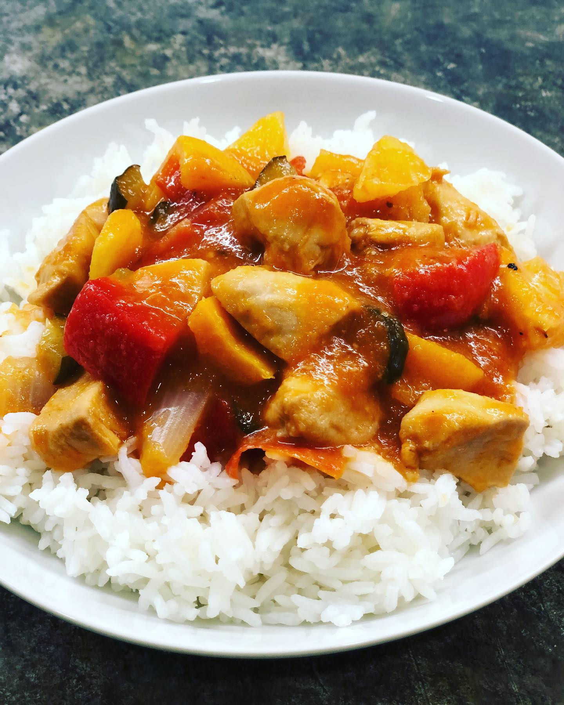

A lot of our favourite asian dishes come with sweet & sour sauce, which makes any food brighter and so yummy ü§§ ! You can easily buy it in any grocery store, however, the content of such sauce is questionable most of the time... So we made our own sweet and sour sauce and enjoyed it a lot! Yes, it was a bit time consuming but it's not that complicated and definitely worth it. Once you make your sweet and sour sauce, try to cook sweet and sour chicken with rice! Just fry chicken breast cubes, add the sauce, chunks of onion, cucumber, bell pepper, tomato and pineapple and simmer for 10 min, veggies should be crunchy. Cook plain rice separately üòä __ #cookathome #stayhome #healthyrecipes #sweetandsour #sauce #asianfood #dinnerideas #lunchideas #eatinghealthy #feedfeed #foodstagram #foodblogfeed #sgfood #sgfoodie #singapore #готовимдома #сидимдома #зож #здоровыерецепты #вкусноиполезно #quarantinecooking
2020-04-24 22:07:51
Back to main page